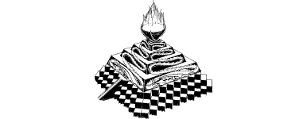

270
Through a square hole in the wall of the tower, you catch your first clear view of this subterranean domain which lies deep beneath the crater. Nestling within a colossal cavern of crimson lava-rock, you look out across an alien city that is split in two by a steep-sided chasm. Lavas swoop back and forth across this divide while their wingless comrades traverse it by means of a narrow bridge constructed from blocks of blue-grey basalt. As you stare at the stubby towers and flat-roofed dwellings clustered on either side, your heart suddenly skips a beat. Perched upon a vast mound of shiny black cubes on the far side of the chasm you see a temple. Carvings of dragons embellish its angular surfaces, engraved in such a fashion that their scaly bodies lie recumbent around the base of the edifice whilst their tails writhe towards its highest level. Here they become entwined to form a twisted stem. Atop this stem, like branches fanning out above the trunk of a petrified tree, you see an inverted cupola of bright orange flames: a nest of fire. Your senses confirm that you have found the lair of Huan’zhor the Dragonlord, as revealed in the Tome of Darkness. This is the nest of fire which lies upon the Tree of the Wyrm, and it is here that you will find the scarab that will allow you to leave Huan’zhor’s hellish domain. Quietly you resolve to reach the distant temple and achieve this aim.
{kind=link}

You magnify your vision and your hopes rise when you see that both the fiery nest and the temple appear to be uninhabited. However, your enthusiasm is soon tempered when you consider how you can reach the far side undetected. For several minutes you observe the Lavas flying over the chasm and the traffic of wingless reptilians who cross via the bridge. The construction of new dwellings is taking place on the far side and the Lavas are busy overseeing the transportation of building blocks from a quarry situated close to the tower in which you are standing. Under the direction of the Lavas, a steady convoy of winged dragons transports these quarried blocks across the chasm in great nets which are slung beneath their bellies. As you watch this activity, you formulate two ways of reaching the far side. You could attempt to cross the bridge during a lull in the traffic, or you could try to stow away in one of the nets being ferried across by the lumbering dragons.
If you wish to attempt to cross the chasm via the bridge, turn to 259.
If you decide to try to stow away in one of the dragon’s nets, turn to 179.